mybatis运行过程源码分析
mybatis运行过程源码分析
[toc]
前言
了解mybatis运行流程是mybatis插件开发的前提，下面根据mybtais最基本的流程来分析mybatis运行过程
mybatis版本
1 | <dependency> |
测试代码
1 | public class Main { |
流程分析
1.创建SqlSessionFactory对象
整体流程
创建SqlSessionFactoryBuilder对象，调用build方法传入InputStream参数
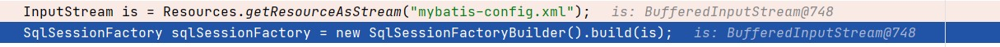
步入build方法

调用SqlSessionFactoryBuilder对象中build的重载方法，继续步入该方法
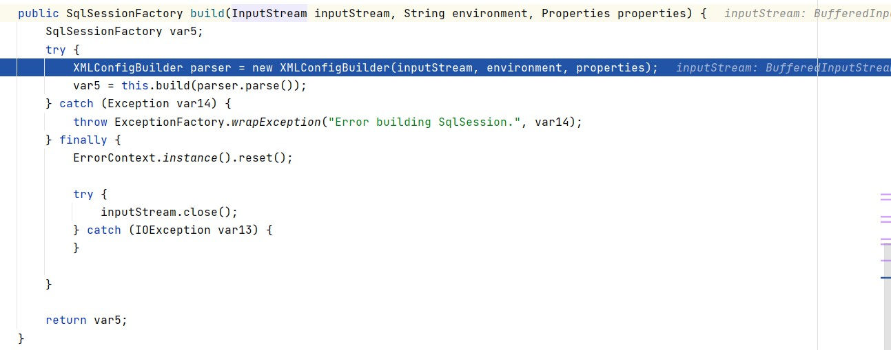
该方法定义了一个SqlSessionFactory接口并初始化后返回，我们重点关注SqlSessionFactory接口的初始化过程，注意，我们在第一步中创建的InputStream不需要我们手动调用它的close方法，这是因为在build方法中该I/O流已经被关闭
build方法中SqlSessionFactory接口的初始化流程
我们看try-catch语句块，首先定义了XMLConfigBuilder的示例parser，该对象的作用是创建一个Configuration对象，该对象中定义了xml配置文件的相关信息。
重点关注SqlSessionFactory的对象是如何创建的，首先调用SqlSessionFactoryBuilder对象的build的另一个重载方法，并用parser对象的parse方法创建一个Configuration对象作为参数传入，我们先看parse方法创建Configuration对象的流程再看build方法的执行流程
parse方法创建Configuration对象的流程
步入该方法
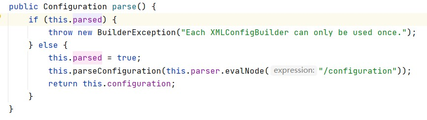
this.parsed的初始值是false，这保证Configuration对象不会被重复创建
接着步入parseConfiguration方法
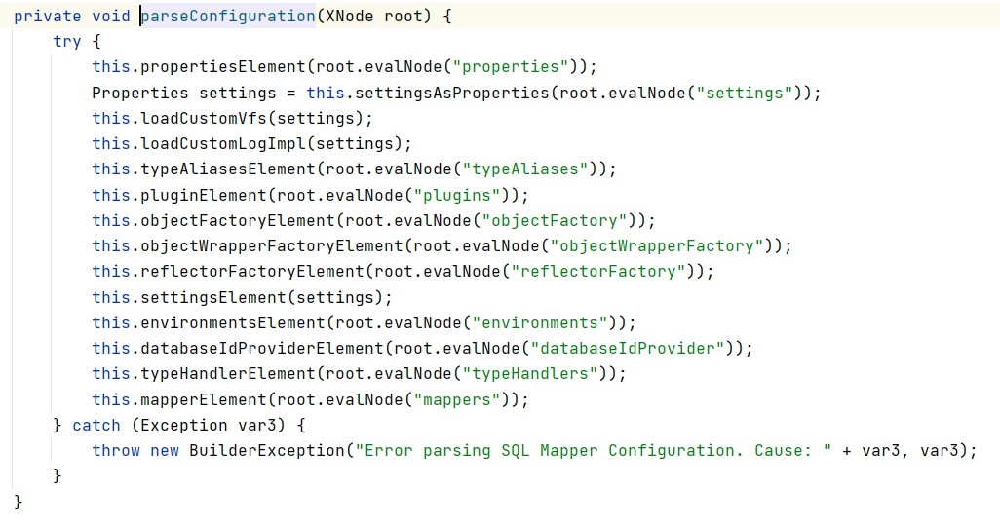
该方法主要是用来解析mybatis的xml配置文件，该方法的参数为mybatis-config.xml的根节点configuration
以this.propertiesElement(root.evalNode("properties"));为例，该语句的作用就是解析mybatis-config.xml文件中配置的properties标签中的内容，具体执行流程如下图：
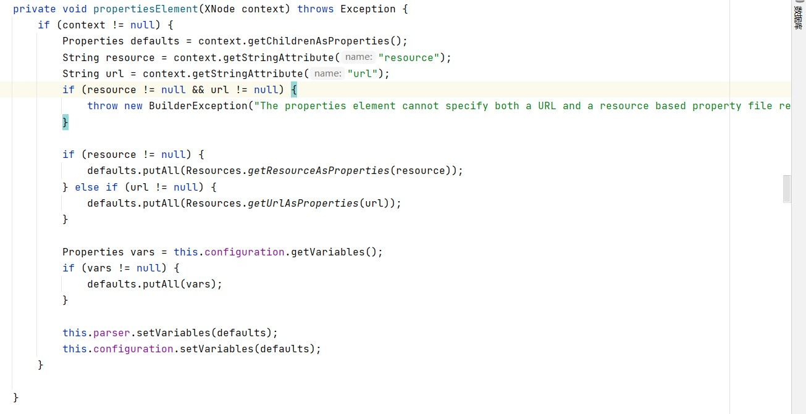
由于都是xml解析相关的内容，这里不详细分析
build方法的执行流程
步入该方法
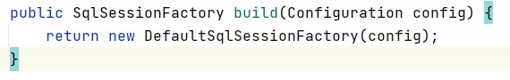
该方法新建了一个DefaultSqlSessionFactory对象，这说明我们创建的SqlSessionFactory对象是一个DefaultSqlSessionFactory对象。继续步入DefaultSqlSessionFactory对象的构造方法
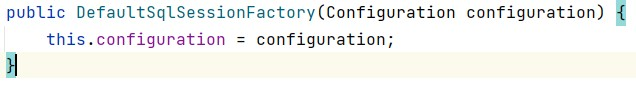
该构造方法将传入的Configuration对象赋值给了DefaultSqlSessionFactory对象的属性。
至此，SqlSessionFactory创建完成
2.获取SqlSession对象
步入openSession()方法
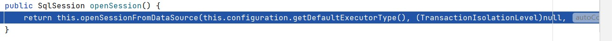
步入openSessionFromDataSource方法
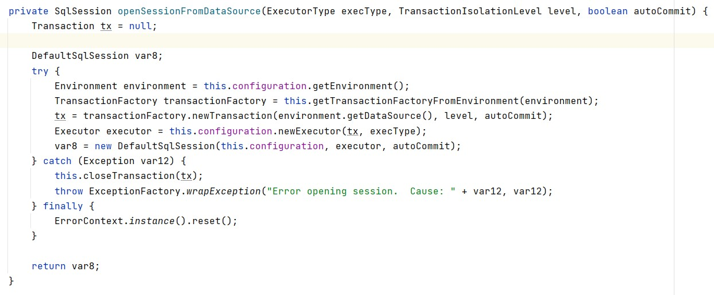
前面几句是关于环境和事务的设置，这里重点关注Executor executor = this.configuration.newExecutor(tx, execType);，该语句创造了一个执行器对象，该对象主要用来执行sql语句。
步入newExecutor方法
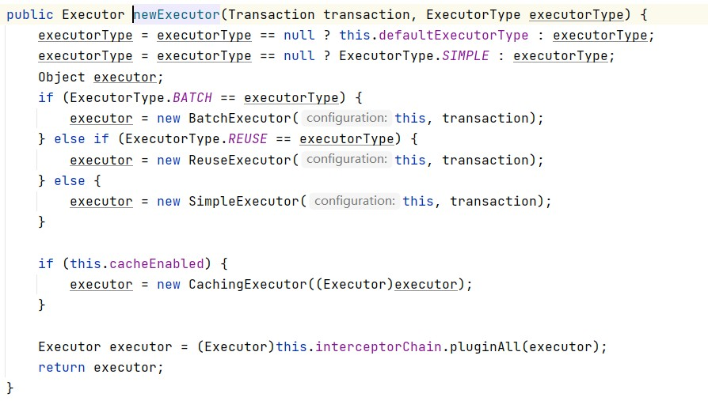
该方法首先根据executor的不同类型创建不同的executor对象，关于executor的类型mybatis官方文档中有说明，该属性被配置在mybatis-config.xml的setting标签中。
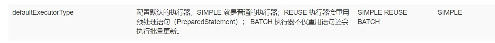
然后判断我们是否开启了二级缓存，如果开启，就用CachingExecutor包装我们刚刚创建的executor对象。
注意最后executor对象又被Executor executor = (Executor)this.interceptorChain.pluginAll(executor);语句包装，改包装过程涉及到插件的知识，这里不详细说明
至此我们回到刚刚的openSessionFromDataSource方法，var8 = new DefaultSqlSession(this.configuration, executor, autoCommit);该语句将configuration和executor对象封装至SqlSession对象，至此，SqlSession对象获取完成
3.获取接口的实现对象
步入sqlSession.getMapper()方法
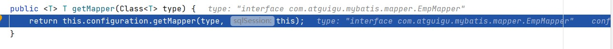
继续步入this.configuration.getMapper(type, this)方法
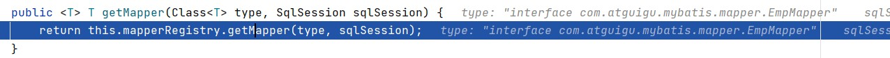
继续步入this.mapperRegistry.getMapper(type, sqlSession)方法
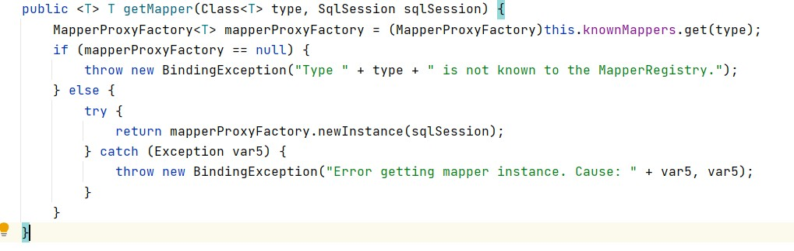
该方法声明了MapperProxyFactory对象，并用该对象去创建MapperProxy对象，步入创建MapperProxy对象的过程方法return mapperProxyFactory.newInstance(sqlSession);
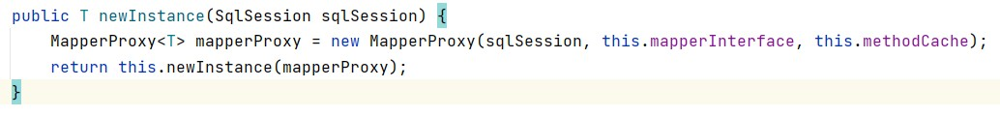
该方法首先创建了一个MapperProxy对象，注意，该对象实现了InvocationHandler接口
步入this.newInstance(mapperProxy)方法
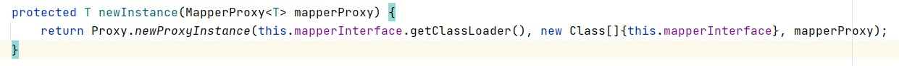
该方法创建了我们传入接口的代理，使用的方式是JDK动态代理。
至此，接口的实现对象创建完成
参考链接
深入浅出MyBatis技术原理与实战 第六章 MyBatis的解析和运行原理